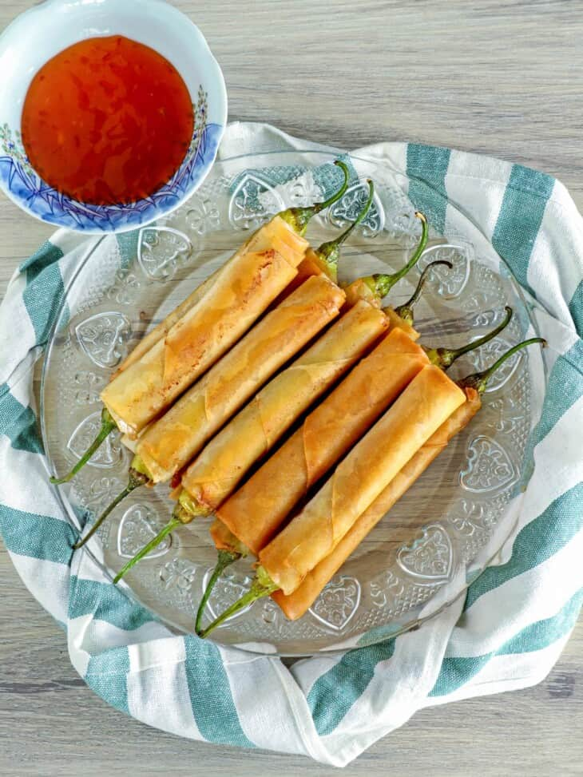

Dynamite Lumpia

Description:
Dynamite Lumpia is a version of the popular Filipino deep-fried egg rolls. This version is unique because it involves the use of stuffed long green chili. The idea is somewhat similar to chile relleno, except that the stuffed chili peppers are wrapped in lumpia wrapper and deep fried until golden brown and crispy.
Ingredients:
- 8 pieces long green pepper
- 4 ounces cheddar cheese
- 8 pieces lumpia wrapper
- 2 cups cooking oil
- 6 ounces ground pork
- 1 pience onion (minced)
- 3 cloves garlic (crushed and minced)
- 1 piece egg
- 2 tablespoons cooking oil
- Salt and ground pepper to taste
Steps:
- Prepare the ground pork stuffing by heating 3 tablespoons oil in a pan. Saute garlic and onion until the latter softens. Add ground pork. Saute until medium brown. Season with salt and ground black pepper. Remove from the pan and put on a large bowl. Let it cool down. Beat 1 piece of egg and pour into the cooked ground pork. Mix well. Set aside.
- Slice one side of the peppers lengthwise all the way to the bottom. Remove the seeds by gently scraping using a small spoon or a butter knife. Set aside.
- Slice the cheddar cheese into long pieces. Stuff individual slices of cheese into each pepper. Sccop the cooked meat mixture and stuff into the chili peppers. Make sure that there is enough meat.
- Wrap the stuffed peppers in lumpia wrapper.
- Heat 2 cups of oil in a pan. Fry each piece of dynamite lumpia in medium heat for 2 minutes per side or until lumpia wrapper turns golden brown. Note: you may fry longer if needed.
- Remove from pan and place over a wire rack. Let it cool down. Arrange in a serving plate and then serve with your favorite condiment.
- Share and enjoy!